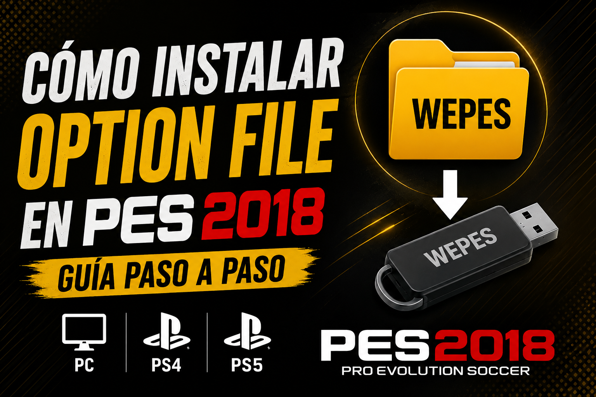
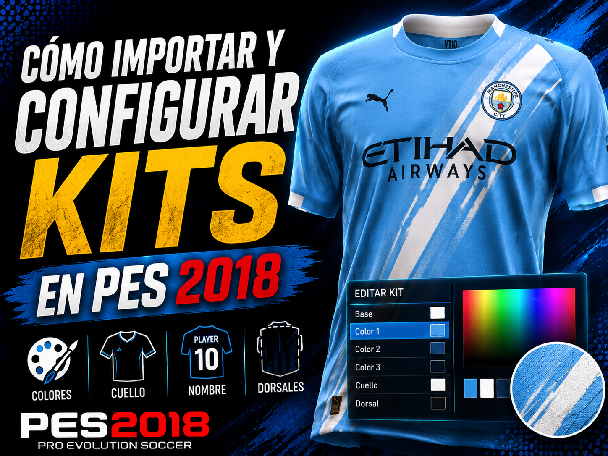
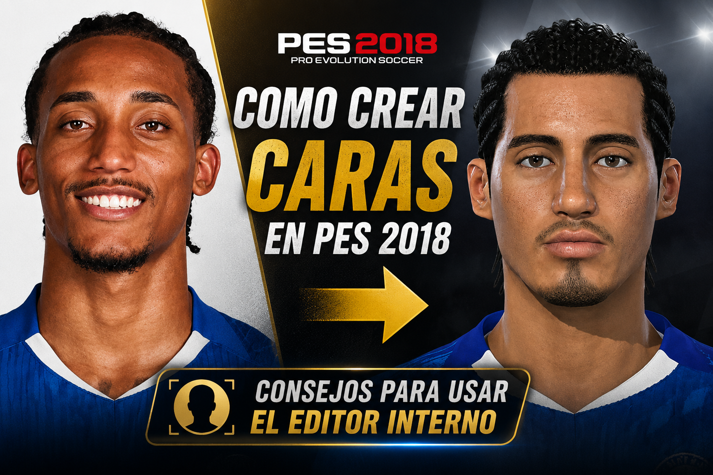
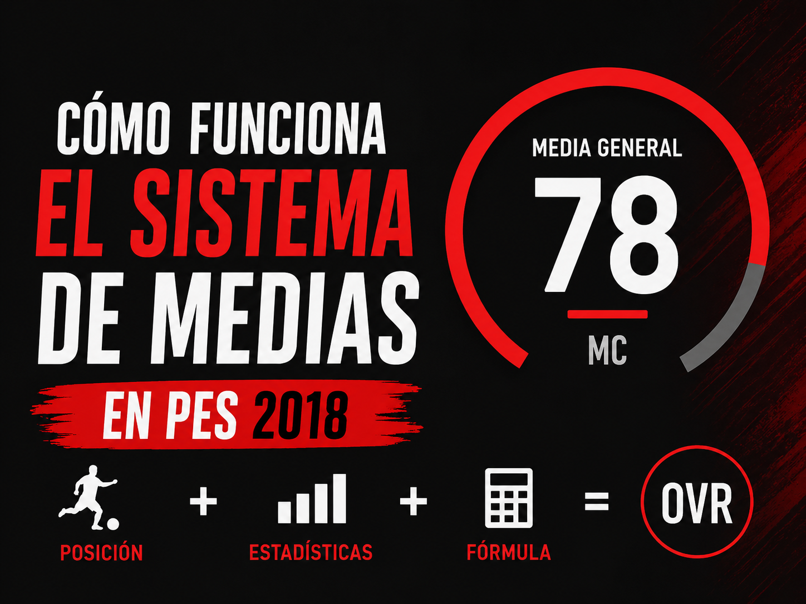
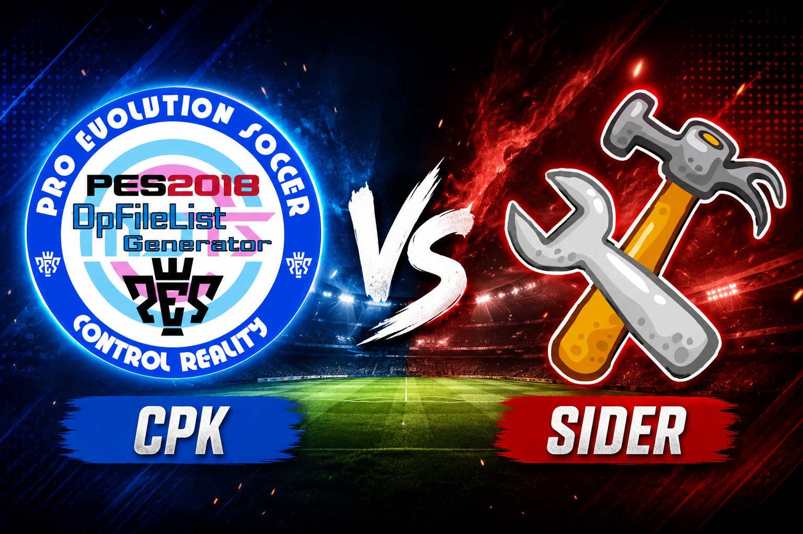
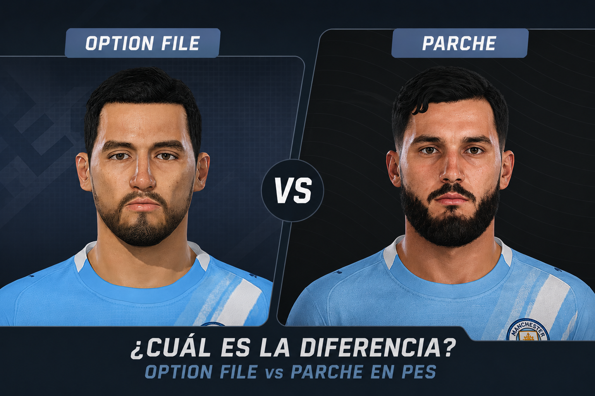

Cómo instalar un Option File en PES 2018
Guía paso a paso para instalar un Option File en PES 2018 en PC, PS4 y PS5: carpeta WEPES, importación de campeonatos, equipos, estructura de ligas y guardado.
Ver guiaTutoriales, tacticas y consejos para llevar tu Liga Máster al siguiente nivel.

Guía paso a paso para instalar un Option File en PES 2018 en PC, PS4 y PS5: carpeta WEPES, importación de campeonatos, equipos, estructura de ligas y guardado.
Ver guia
Guía para configurar colores, cuello, dorsales, nombre del jugador, resolución y detalles visuales al importar kits en PES 2018.
Ver guia
Consejos prácticos para crear caras más parecidas en PES 2018 usando el editor interno del juego.
Ver guia
Explicación simple sobre cómo PES 2018 calcula la media general según la posición, qué estadísticas pesan más y cómo usamos una fórmula aproximada.
Ver guia
Guía para entender las diferencias entre CPK, Sider, LiveCPK y módulos en PES 2018 para PC, y saber cuándo conviene usar cada método.
Ver guia
Diferencias entre Option File y parche en PES: qué modifica cada uno, en qué plataformas conviene usarlos y cuál elegir según tu caso.
Ver guia